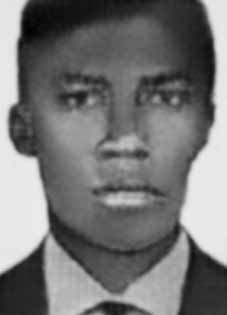

Gerson
Theodoro
de Oliveira
CIRCUNSTÂNCIAS DA MORTE
Gerson Theodoro de Oliveira morreu no dia 22 de março de 1971, no 1º Batalhão da Polícia do Exército, sede do DOI-CODI no Rio de Janeiro.
De acordo com a versão oficial dos fatos divulgada à época, na esquina da Rua Cupertino com a Avenida Suburbana, uma equipe de agentes de Segurança em operação encontrou-se com elementos subversivos, os quais, recebendo ordem de prisão, reagiram a mesma travando-se cerrado tiroteio sendo feridos os terroristas, da VPR, Gerson Theodoro de Oliveira e Maurício Guilherme da Silveira, que faleceram quando eram transportados para o Hospital Salgado Filho.
Passados mais de 40 anos da morte de Gerson Theodoro, as investigações realizadas permitem apontar a falsidade da versão divulgada pelos órgãos de repressão. De acordo com a certidão de óbito expedida por autoridade competente, Gerson teria morrido na rua Barão de Mesquita, nº 425, no Rio de Janeiro (RJ), que é o mesmo endereço do quartel do 1º Batalhão de Polícia do Exército, que abrigou o Pelotão de Investigações Criminais (PIC) e o DOI do I Exército, um dos principais centros de detenção e tortura comandado pelo Exército brasileiro.
A informação contida na certidão de óbito foi ratificada pelo Registro de Ocorrência nº 1.408, de 22 de março de 1971, em que o capitão Celso Aranha comunica o suposto tiroteio ocorrido na avenida Suburbana. Embora na versão divulgada o tiroteio tenha ocorrido por volta das 11h, a comunicação foi registrada às 15h do mesmo dia. A ocorrência registrou que os corpos de Gerson Theodoro e Maurício Guilherme encontravam-se no 1º Batalhão da Polícia do Exército, na rua Barão de Mesquita, 425.
A essas informações, soma-se o auto de exame cadavérico de Gerson Theodoro, que compõe o acervo do Projeto Brasil Nunca Mais, indicando que o militante foi morto com um único tiro, que lhe penetrou pelas costas provocando a morte por ferimento transfixante do tórax. A informação do laudo cadavérico não é compatível com as informações contidas nos documentos anteriores, segundo as quais Gerson Theodoro havia reagido à prisão e se envolvido em cerrado tiroteio.
Além disso, o auto de exame cadavérico revelou que o corpo de Gerson Theodoro deu entrada no Instituto Médico Legal (IML) às 17h30. O grande intervalo entre o registro da morte de Gerson (11h) e a entrada do corpo no IML sugere que durante esse tempo o corpo foi mantido na sede do DOI-CODI. No prontuário nº 50.329, de 23 de março de 1971, expedido pela Secretaria de Segurança Pública do Rio de Janeiro, consta um telex transmitido pelo então tenente Hughes, lotado no Quartel da Polícia do Exército no Rio de Janeiro, afirmando que a polícia conhecia o “aparelho” utilizado por Maurício Guilherme, morto na mesma ocasião que Gerson Theodoro.
O telex registra que no dia seguinte à morte de Gerson Theodoro e Maurício Guilherme, os policiais retornaram ao mencionado “aparelho”, o que pode ser entendido como um indício de que os dois militantes da Vanguarda Popular Revolucionária (VPR) foram presos, conduzidos ao DOI-CODI, torturados e executados. O tenente Hughes no documento em exame é Antônio Fernando Hughes de Carvalho, apontado como responsável pela tortura e morte do ex-deputado Rubens Paiva e identificado por Inês Etienne Romeu, perante a Comissão Nacional da Verdade (CNV), como o torturador de codinome “Alan” que atuava na Casa da Morte de Petrópolis.
Pesquisadores da CNV localizaram no acervo do Arquivo Nacional um documento produzido pelo Departamento Estadual de Ordem Política e Social de São Paulo (DEOPS/SP) que analisa a documentação apreendida no aparelho utilizado pela VPR no Rio de Janeiro (RJ). O conteúdo do documento, datado de 30 de junho de 1971, corrobora a tese de que a prisão de Gerson Theodoro e Maurício Guilherme consistiu em operação de informações e segurança empreendida pelo DOI-CODI com o intuito de desmantelar a organização a que os militantes pertenciam.
Registra ainda que, na ocasião, as perdas infligidas à VPR pelos órgãos de segurança, especialmente por meio do assassinato de Gerson Theodoro de Oliveira, comandante da Unidade de Combate Juarez Guimarães de Brito, estavam abrindo caminho para a captura de Carlos Lamarca, que naquele momento era um dos militantes mais procurados pelas forças de repressão.
As pesquisas documentais demonstraram que, antes da morte, Gerson Theodoro e Maurício Guilherme estavam sendo investigados pelos órgãos de segurança e informações do regime militar, e que a ação de agentes do Estado brasileiro que culminou com a morte dos dois pode ser entendida como parte de uma operação mais ampla que visava desmantelar a VPR.
Os restos mortais de Gerson Theodoro de Oliveira foram enterrados no cemitério São Francisco Xavier, no Rio de Janeiro (RJ).
Gerson Theodoro de Oliveira died on March 22, 1971, at the 1st Army Police Battalion, DOI-CODI headquarters in Rio de Janeiro.
According to the official version of the events published at the time, on the corner of Rua Cupertino and Avenida Suburbana, a team of Security agents in operation met with subversive elements, who, upon receiving an arrest order, reacted to the same by engaging in a fierce shootout, injuring the terrorists, from VPR, Gerson Theodoro de Oliveira and Maurício Guilherme da Silveira, who died while being transported to Salgado Filho Hospital.
More than 40 years after Gerson Theodoro's death, the investigations carried out reveal the falsehood of the version released by the repression bodies. According to the death certificate issued by the competent authority, Gerson died at Rua Barão de Mesquita, nº 425, in Rio de Janeiro (RJ), which is the same address as the barracks of the 1st Army Police Battalion, which housed the Criminal Investigations Platoon (PIC) and the DOI of the 1st Army, one of the main detention and torture centers commanded by the Brazilian Army.
The information contained in the death certificate was ratified by Occurrence Record No. 1,408, dated March 22, 1971, in which Captain Celso Aranha reports the alleged shooting that occurred on Avenida Suburbana. Although in the published version the shooting occurred around 11 am, the communication was recorded at 3 pm on the same day. The incident recorded that the bodies of Gerson Theodoro and Maurício Guilherme were at the 1st Battalion of the Army Police, at Rua Barão de Mesquita, 425.
In addition to this information, there is the cadaveric examination record of Gerson Theodoro, which is part of the Brazil Never Again Project collection, indicating that the militant was killed with a single shot, which penetrated his back, causing death from a transfixing wound to the chest. The information in the cadaveric report is not compatible with the information contained in previous documents, according to which Gerson Theodoro had reacted to the arrest and was involved in a fierce shootout.
Furthermore, the cadaver examination report revealed that Gerson Theodoro's body was admitted to the Legal Medical Institute (IML) at 5:30 pm. The long interval between the registration of Gerson's death (11 am) and the body's entry into the IML suggests that during this time the body was kept at the DOI-CODI headquarters. In record no. 50,329, dated March 23, 1971, issued by the Public Security Secretariat of Rio de Janeiro, there is a telex transmitted by the then lieutenant Hughes, stationed at the Army Police Headquarters in Rio de Janeiro, stating that the police knew the “device” used by Maurício Guilherme, who died on the same occasion as Gerson Theodoro.
The telex records that the day after the death of Gerson Theodoro and Maurício Guilherme, the police returned to the aforementioned “apparatus”, which can be understood as an indication that the two militants of the Vanguarda Popular Revolucionária (VPR) were arrested, taken to the DOI-CODI, tortured and executed. Lieutenant Hughes in the document under examination is Antônio Fernando Hughes de Carvalho, identified as responsible for the torture and death of former deputy Rubens Paiva and identified by Inês Etienne Romeu, before the National Truth Commission (CNV), as the torturer codenamed “Alan” who worked in the House of Death in Petrópolis.
CNV researchers located in the National Archives collection a document produced by the State Department of Political and Social Order of São Paulo (DEOPS/SP) that analyzes the documentation seized from the device used by VPR in Rio de Janeiro (RJ). The content of the document, dated June 30, 1971, corroborates the thesis that the arrest of Gerson Theodoro and Maurício Guilherme consisted of an information and security operation undertaken by DOI-CODI with the aim of dismantling the organization to which the militants belonged.
It also records that, at the time, the losses inflicted on the VPR by security agencies, especially through the murder of Gerson Theodoro de Oliveira, commander of the Juarez Guimarães de Brito Combat Unit, were paving the way for the capture of Carlos Lamarca, who at that time was one of the most wanted militants by the repression forces.
Documentary research demonstrated that, before their deaths, Gerson Theodoro and Maurício Guilherme were being investigated by the security and intelligence agencies of the military regime, and that the action of agents of the Brazilian State that culminated in their deaths can be understood as part of a broader operation that aimed to dismantle the VPR.
The remains of Gerson Theodoro de Oliveira were buried in the São Francisco Xavier cemetery, in Rio de Janeiro (RJ).
Gerson Theodoro de Oliveira murió el 22 de marzo de 1971, en el 1.er Batallón de Policía del Ejército, sede del DOI-CODI en Río de Janeiro.
Según la versión oficial de los hechos publicada en ese momento, en la esquina de la Rua Cupertino y la Avenida Suburbana, un equipo de agentes de Seguridad en operación se encontró con elementos subversivos, quienes, al recibir una orden de arresto, reaccionaron con un feroz tiroteo, hiriendo a los terroristas de la VPR, Gerson Theodoro de Oliveira y Maurício Guilherme da Silveira, quienes murieron mientras eran trasladados al Hospital Salgado Filho.
A más de 40 años de la muerte de Gerson Theodoro, las investigaciones realizadas revelan la falsedad de la versión difundida por los órganos de represión. Según el certificado de defunción expedido por la autoridad competente, Gerson falleció en la Rua Barão de Mesquita, nº 425, en Río de Janeiro (RJ), que coincide con el cuartel del 1.er Batallón de Policía del Ejército, que albergaba la Sección de Investigaciones Criminales (PIC) y el DOI del 1.er Ejército, uno de los principales centros de detención y tortura comandados por el Ejército brasileño.
La información contenida en el acta de defunción fue ratificada por el Acta de Hecho N° 1.408, de 22 de marzo de 1971, en la que el Capitán Celso Aranha relata el presunto tiroteo ocurrido en la Avenida Suburbana. Si bien en la versión publicada el tiroteo ocurrió alrededor de las 11 de la mañana, la comunicación se registró a las 3 de la tarde del mismo día. El hecho registró que los cuerpos de Gerson Theodoro y Maurício Guilherme se encontraban en el 1.er Batallón de la Policía Militar, en Rua Barão de Mesquita, 425.
A esta información, se suma el acta de examen cadavérico de Gerson Theodoro, que forma parte de la colección del Proyecto Brasil Nunca Más, que indica que el militante fue asesinado de un solo disparo, que atravesó su espalda, causándole la muerte por una herida transfixiante en el pecho. La información del informe cadavérico no es compatible con la información contenida en documentos anteriores, según los cuales Gerson Theodoro había reaccionado a la detención y estaba involucrado en un feroz tiroteo.
Además, el informe de examen del cadáver reveló que el cuerpo de Gerson Theodoro ingresó al Instituto Médico Legal (IML) a las 5:30 p.m. El largo intervalo entre el registro de la muerte de Gerson (11 am) y el ingreso del cuerpo al IML sugiere que durante este tiempo el cuerpo estuvo guardado en la sede del DOI-CODI. En el expediente nro. 50.329, de 23 de marzo de 1971, expedida por la Secretaría de Seguridad Pública de Río de Janeiro, hay un télex transmitido por el entonces teniente Hughes, destinado en la Jefatura de Policía del Ejército, en Río de Janeiro, afirmando que la policía conocía el “dispositivo” utilizado por Maurício Guilherme, fallecido en la misma ocasión que Gerson Theodoro.
El télex registra que al día siguiente de la muerte de Gerson Theodoro y Maurício Guilherme, la policía regresó al citado “aparato”, lo que puede entenderse como una indicación de que los dos militantes de la Vanguarda Popular Revolucionaria (VPR) fueron detenidos, llevados al DOI-CODI, torturados y ejecutados. El teniente Hughes en el documento bajo examen es Antônio Fernando Hughes de Carvalho, señalado como responsable de la tortura y muerte del ex diputado Rubens Paiva e identificado por Inês Etienne Romeu, ante la Comisión Nacional de la Verdad (CNV), como el torturador con nombre en código “Alan” que trabajaba en la Casa de la Muerte en Petrópolis.
Investigadores del CNV localizaron en el acervo del Archivo Nacional un documento elaborado por el Departamento de Estado de Orden Político y Social de São Paulo (DEOPS/SP) que analiza la documentación incautada del dispositivo utilizado por la VPR en Río de Janeiro (RJ). El contenido del documento, de 30 de junio de 1971, corrobora la tesis de que la detención de Gerson Theodoro y Maurício Guilherme consistió en una operación de información y seguridad realizada por el DOI-CODI con el objetivo de desmantelar la organización a la que pertenecían los militantes.
También registra que, en ese momento, las pérdidas infligidas al VPR por los organismos de seguridad, especialmente a través del asesinato de Gerson Theodoro de Oliveira, comandante de la Unidad de Combate Juárez Guimarães de Brito, estaban allanando el camino para la captura de Carlos Lamarca, quien en ese momento era uno de los militantes más buscados por las fuerzas de represión.
La investigación documental demostró que, antes de su muerte, Gerson Theodoro y Maurício Guilherme estaban siendo investigados por los organismos de seguridad e inteligencia del régimen militar, y que la acción de agentes del Estado brasileño que culminó con sus muertes puede entenderse como parte de una operación más amplia que tenía como objetivo desmantelar la VPR.
Los restos de Gerson Theodoro de Oliveira fueron enterrados en el cementerio de São Francisco Xavier, en Río de Janeiro (RJ).